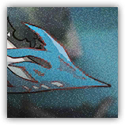
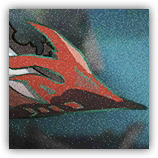

|
 |
莽撞的墨魉。画家随手命名的化物，蒙着眼似的只顾往前冲。 从不回头。从来不顾及周遭的情况，经常因此尝到苦头，和匕现关系很差。 |
| AC 17（天生护甲） | 先攻 +3（13） |
| HP 115（10d12+50） | |
| 速度 50 尺 | |
| 调整 | 豁免 | 调整 | 豁免 | 调整 | 豁免 | |||||||||
|---|---|---|---|---|---|---|---|---|---|---|---|---|---|---|
| 力量 | 20 | +5 | +8 | 敏捷 | 16 | +3 | +3 | 体质 | 20 | +5 | +8 | |||
| 智力 | 6 | -2 | -2 | 感知 | 10 | +0 | +0 | 魅力 | 8 | -1 | -1 |
| 技能 运动+8，威吓+2 |
| 免疫 力竭，中毒，恐慌 |
| 感官 黑暗视觉60尺，被动察觉10 |
| 语言 懂通用语但不能说 |
| CR 6（XP 2,300；PB +3） |
|
 |
不歇的墨魉。同类里更执拗的一只，存在的价值仿佛就是前进。 精诚所至。仍旧只会一门心思往前冲，硬生生把金石撞开。 |
| AC 18（天生护甲） | 先攻 +4（14） |
| HP 138（12d12+60） | |
| 速度 50 尺 | |
| 调整 | 豁免 | 调整 | 豁免 | 调整 | 豁免 | |||||||||
|---|---|---|---|---|---|---|---|---|---|---|---|---|---|---|
| 力量 | 20 | +5 | +9 | 敏捷 | 18 | +4 | +4 | 体质 | 20 | +5 | +9 | |||
| 智力 | 6 | -2 | -2 | 感知 | 11 | +0 | +0 | 魅力 | 8 | -1 | -1 |
| 技能 运动+9，威吓+3 |
| 免疫 力竭，中毒，恐慌 |
| 感官 黑暗视觉60尺，被动察觉10 |
| 语言 懂通用语但不能说 |
| CR 8（XP 3,900；PB +3） |